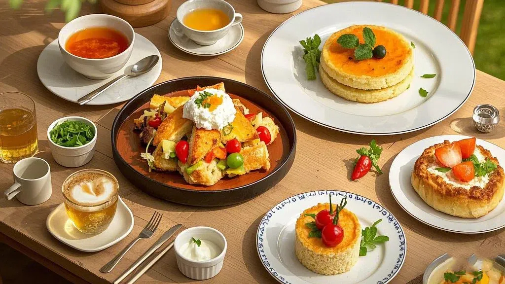

-

- 
美食的色泽是其给人的第一印象，如同画卷的色彩基调。鲜艳的红如熟透的番茄、浓郁的绿像新鲜的蔬菜、淡雅的黄似金黄的玉米等，丰富的色彩相互搭配、交相辉映，不仅能刺激视觉神经，唤起人们的食欲，还能反映出食材的新鲜程度与烹饪手法的精妙。例如，一道制作精良的糖醋排骨，呈现出红亮诱人的色泽，在灯光下闪烁着光泽，让人未动筷便已垂涎三尺。
美食的香气犹如无形的精灵，在空气中肆意飘散。它或是食材本身散发的清香，如清晨采摘的花朵般淡雅；或是烹饪过程中产生的焦香，带着一丝烟火的热烈；又或是香料赋予的浓郁芬芳，如异国风情的神秘韵味。比如咖啡的醇香，烘焙后的咖啡豆研磨成粉，热水冲泡瞬间，那浓郁的香气便弥漫开来，萦绕在鼻尖，令人陶醉其中，迫不及待地想要品尝一口。
味道是美食的灵魂核心。酸如柠檬的清新酸爽，能瞬间激活味蕾；甜似蜂蜜的醇厚甘甜，给人带来愉悦的满足感；苦像苦瓜的独特回甘，别有一番风味；辣若辣椒的炽热浓烈，刺激着口腔神经；咸犹海盐的质朴本味，恰到好处地提鲜。一道正宗的川菜麻婆豆腐，麻辣鲜香在舌尖上共舞，豆腐的嫩滑与麻辣的刺激相互交融，多种味道层次分明又和谐统一，构成了令人难以忘怀的味觉盛宴。
美食的形态宛如艺术的雕塑，各具姿态。有的如花朵般娇艳绽放，精致细腻；有的似山峦般起伏连绵，大气磅礴；有的像动物般栩栩如生，憨态可掬。以中式点心为例，苏式月饼制作成圆形，表面的花纹精美细致，如同古老的图腾，每一道褶皱都饱含着匠人的心血，不仅体现了食物的美观性，也增添了用餐时的仪式感。
质地体现了美食的口感特性。或柔软如云朵般轻盈，入口即化，像细腻的奶油蛋糕；或富有弹性如活力的精灵，嚼劲十足，比如 Q 弹的鱼丸；或酥脆如秋叶般易碎，咬下去嘎吱作响，像金黄的炸薯条；或绵密如丝绒般紧密，口感醇厚，例如蒸熟的红薯。一块上等的牛排，煎至外皮微焦，内部肉质鲜嫩多汁，纹理清晰，其质地在牙齿与舌尖的触碰间展现得淋漓尽致，给人带来美妙的口感体验。
美食不仅满足口腹之欲，还具备滋养身体的功效。谷物富含碳水化合物，为身体提供能量；蔬菜富含维生素与膳食纤维，促进消化与新陈代谢；肉类蕴含蛋白质等营养成分，助力身体构建与修复；水果饱含维生素与水分，润泽肌肤与补充营养。如传统的养生粥品，将多种谷物与红枣、桂圆等食材熬煮在一起，既能暖胃又能补血益气，在享受美味的同时，为身体注入满满的活力与营养，达到饮食与养生的和谐统一。
北京烤鸭，堪称中华美食之瑰宝。其鸭身表皮烤至金红酥脆，宛如披上了一层华丽的红袍，在灯光下闪烁着诱人的光泽。片鸭师傅手法娴熟，将鸭肉切成薄片，每一片都薄厚均匀，纹理清晰可见，鸭皮与鸭肉相连，肥而不腻。搭配上薄如蝉翼的葱丝、翠绿的黄瓜条，用香软的荷叶饼卷起，再蘸上甜面酱，放入口中，首先感受到的是鸭皮的香脆，“咔嚓” 一声，油脂在齿间散开却丝毫不觉油腻，紧接着是鸭肉的鲜嫩多汁与葱丝、黄瓜的清爽以及甜面酱的醇厚香甜相互交融，多种口感与味道在舌尖上交织出一场和谐美妙的味觉盛宴，每一口都仿佛诉说着老北京的独特韵味与深厚饮食文化底蕴。
法国鹅肝，是法式美食中的奢华象征。它有着细腻如丝绒般的质地，色泽温润，呈淡雅的米黄色，表面光滑平整。当鹅肝在舌尖触碰的瞬间，那柔软至极的口感令人惊叹，轻轻一抿便如奶油般化开，释放出浓郁醇厚的风味。其独特的味道带着淡淡的奶香与甘美，微微的脂香萦绕在口腔之中，与搭配的酸甜果酱形成鲜明对比又相得益彰，或是配上香脆的面包片，鹅肝的绵密与面包的酥脆相互衬托，给味蕾带来一场极致的奢华享受，仿佛将食客带入了充满浪漫与优雅气息的法国美食殿堂，品味着法兰西精致的饮食艺术与独特的美食风情。
墨西哥卷饼是充满活力与热情的美食代表。一张柔软而有韧性的薄饼，犹如承载美味的画布。饼内包裹着丰富多样的馅料，色彩斑斓且口感各异。鲜嫩的烤肉滋滋冒油，散发着诱人的烟熏香气；爽脆的生菜、清甜的番茄、酸辣的洋葱等蔬菜为其增添了清新之感；再加上浓郁的芝士，拉丝的质感与醇厚的味道让人欲罢不能；有时还会融入独特风味的墨西哥酱料，那或火辣或浓郁的滋味瞬间点燃味蕾，各种食材在薄饼的包裹下融合为一体，每一口都能感受到不同层次的口感与味道碰撞，既有肉类的满足、蔬菜的清爽，又有芝士与酱料的浓郁醇厚，仿佛将墨西哥的阳光与热情都汇聚在这一卷之中，带给人一种轻松愉悦且充满异域风情的美食体验。
从以下9中美食中选出你最喜欢的